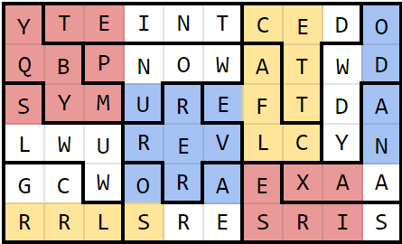
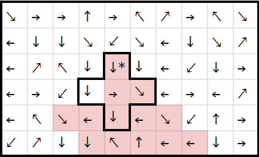
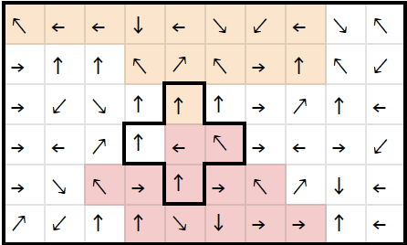
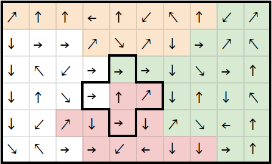
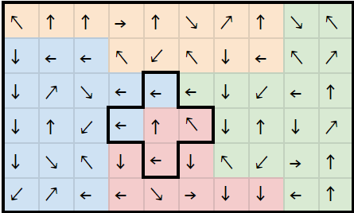

Solution: Permuted Paths
Answer: FURLONG
Written by Sahil Kochar and Ryan Thomas, with ideas from Dawson Do
The first step in this puzzle is to solve the jigsaw puzzle. The star on the X pentomino must be aligned with the star on the arrow grid.

Once the letter grid has been filled out, it can be overlayed on the arrow grid. Following the arrows until it terminates at an edge, then reading the corresponding letters, gives: REVERSE ARROWS
Following the instructions, then finding the next path gives: ROTATE CW NINETY
For this set of instructions, solvers must rotate the arrows clockwise by 90°. However, they must be careful as to rotate the arrows that were already reversed, not the original arrows. The third path gives: REFLECT Y-AXIS AND ADD TWO
After shifting all the letters up by two and reflecting the arrows, the final string reads: TWO TWENTY YARDS UNIT. This clues the answer: FURLONG
